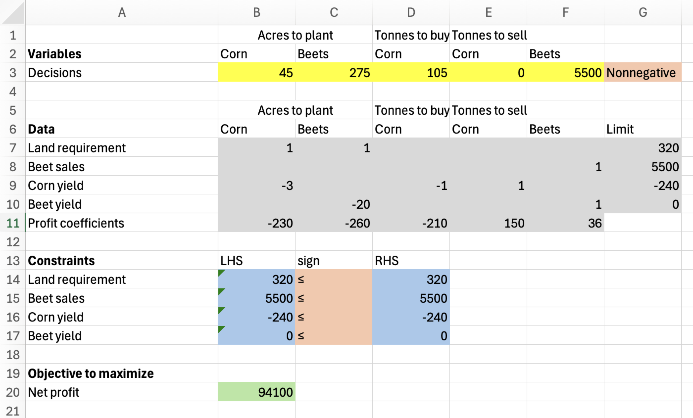
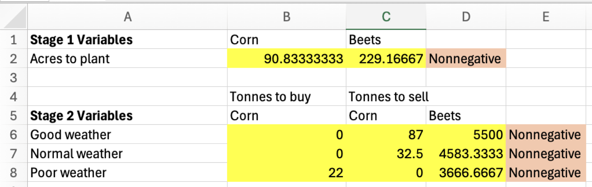
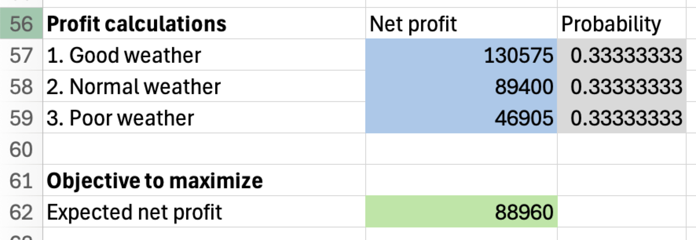

Multi-stage Decision Analysis with LPs
MGMT 306
Purdue University
Dorothy’s farm with known yields
Problem Description
- Dorothy grows corn and sugar beets on her 320 acre farm
- Dorothy needs 240T of corn for cattle feed
- Leftover corn can be sold at $150/T
- Instead of growing the corn herself, she can buy corn for $210/T
- Beets sell for $36/T up to 5500T
- Planting costs are $230/acre and $260/acre for corn, beets respectively
- For now, assume that each acre of corn yields 3T of corn and each acre of beets yields 20T of beets
- How much of each crop should Dorothy plant / sell / buy to maximize profit?
LP Formulation
Variables \[ \begin{aligned} &p_C, p_B &&\text{acres of corn and beets to plant}\\ &s_C, s_B &&\text{tonnes of corn and beets to sell}\\ &b_C &&\text{tonnes of corn to buy} \end{aligned} \]
Objective \[ \max \quad 150s_C + 36 s_B -230 p_C - 260 p_B -210 b_C \qquad\text{(net profit)} \]
LP Formulation continued
Constraints \[ \begin{aligned} &p_C+ p_B\leq 320 &&\text{(land)}\\ &-3p_C+s_C-b_C\leq -240 &&\text{(corn yield)}\\ &-20p_B + s_B\leq 0 &&\text{(beet yield)}\\ & s_B\leq 5500 && \text{(beet sales)}\\ & \text{all variables} \geq 0 \end{aligned} \]
Explanation: The corn yield constraints says that we need to plant and buy enough corn to cover the amount we plan to sell plus the 240 required for cattle feed: \(240 + s_C \leq 3 p_C + b_C\)
The beet yield constraint is similar
Excel model
Excel model for Dorothy’s farm with known yields
Dorothy’s farm with uncertain yields
Problem Description
- Yield actually varies from year to year due to weather conditions
- There are three scenarios
| Scenario | Corn yield (T/acre) | Beet yield (T/acre) | Probability |
|---|---|---|---|
| 1. Good weather | 3.6 | 24 | 1/3 |
| 2. Normal weather | 3 | 20 | 1/3 |
| 3. Bad weather | 2.4 | 16 | 1/3 |
Sequence of decisions
- Decision making flow-chart:
- Stage 1: Dorothy plants crops (makes choices for \(p_C\), \(p_B\))
- Yield is realized (one of the three scenarios is revealed)
- Stage 2: After observing the yield, Dorothy buys deficient corn / sells surplus corn
- What should Dorothy do to maximize expected profit?
LP Model Variables
- Previously, we had five variables: \(p_C\), \(p_B\), \(s_C\), \(s_B\), \(b_C\)
- We will keep the stage 1 variables: \(p_C\), \(p_B\)
- We will replace the stage 2 variables with one copy of the stage 2 variables for each possible scenario: \[\begin{aligned} &s_{C,i}, s_{B,i}&&\text{for $i=1,2,3$}&& \text{t. of corn, beets to sell in scenario $i$}\\ &b_{C,i}&&\text{for $i=1,2,3$}&& \text{t. of corn, beets to buy in scenario $i$} \end{aligned}\] This represents how Dorothy plans to react in stage 2 to the possible weather and yield scenarios. For example, \(s_{C,1}\) is the tonnes of corn Dorothy plans to sell if there is good weather
LP Model Objective
Expected net profit: \[\begin{aligned} \max \quad& (1/3)\times\left(150 s_{C,1} + 36 s_{B,1} - 230 p_C - 260 p_B - 210 b_{C,1}\right)\\ +&(1/3)\times\left(150 s_{C,2} + 36 s_{B,2} - 230 p_C - 260 p_B - 210 b_{C,2}\right)\\ +&(1/3)\times\left(150 s_{C,3} + 36 s_{B,3} - 230 p_C - 260 p_B - 210 b_{C,3}\right) \end{aligned}\]
This is the average of the net profits in each scenario
LP Model Constraints
- Land requirement \[ p_C + p_B \leq 320\]
- Beet sales limit \[ s_{B,i} \leq 5500\quad\text{for all }i=1,2,3\]
- Nonnegativity on all varialbes
LP Model Constraints (continued)
Corn yield: \[\begin{aligned} &-3.6 p_C - b_{C,1} + s_{C,1} \leq - 240&&\text{(corn yield-1)}\\ &-3 p_C - b_{C,2} + s_{C,2} \leq - 240&&\text{(corn yield-2)}\\ &-2.4 p_C - b_{C,3} + s_{C,3} \leq - 240&&\text{(corn yield-3)} \end{aligned}\]
Beet yield: \[\begin{aligned} &-24 p_B +s_{B,1} \leq - 240&&\text{(beet yield-1)}\\ &-20 p_B +s_{B,2} \leq - 240&&\text{(beet yield-2)}\\ &-16 p_B + s_{B,3} \leq - 240&&\text{(beet yield-3)} \end{aligned}\]
Excel model
- Split variables into stage 1 and stage 2
- Repeat stage 2 variables for each scenario
- Repeat constraint and objective calculations once for each scenario (with updated yield parameters)


Excel model (continued)
- Set objective to the average of the three profit values
- The Expected Value (EV) is $88,960

Expected Value of Perfect Information (EVPI)
- Recall that EVPI is the difference between Expected Value with Perfect Information (EVwPI) and the expected value (EV)
- We can use the same spreadsheet with different probabilities to compute the EVwPI
- Scenario 1: $130,575
- Scenario 2: $94,100
- Scenario 3: $50,720
- The EVwPI is \(\text{EVwPI} = \frac{1}{3}\cdot 130575 + \frac{1}{3} \cdot 94100 + \frac{1}{3}50720 =91789.33\)
- The EVPI is \(\text{EVPI} = \text{EVwPI} - \text{EV} = 2829.33\)